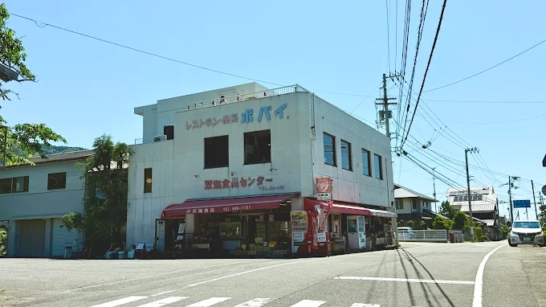
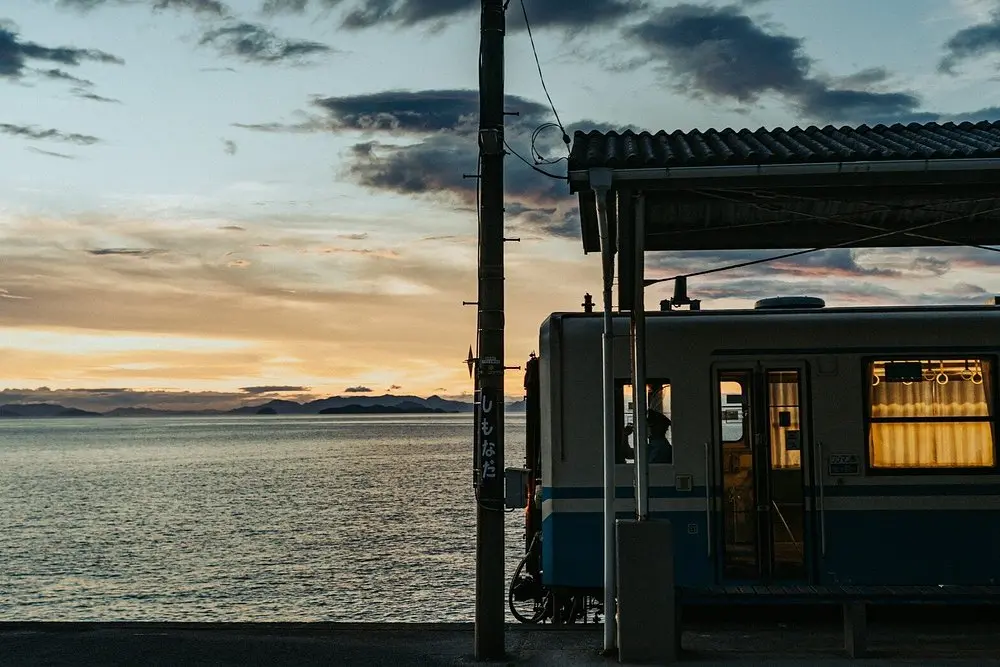
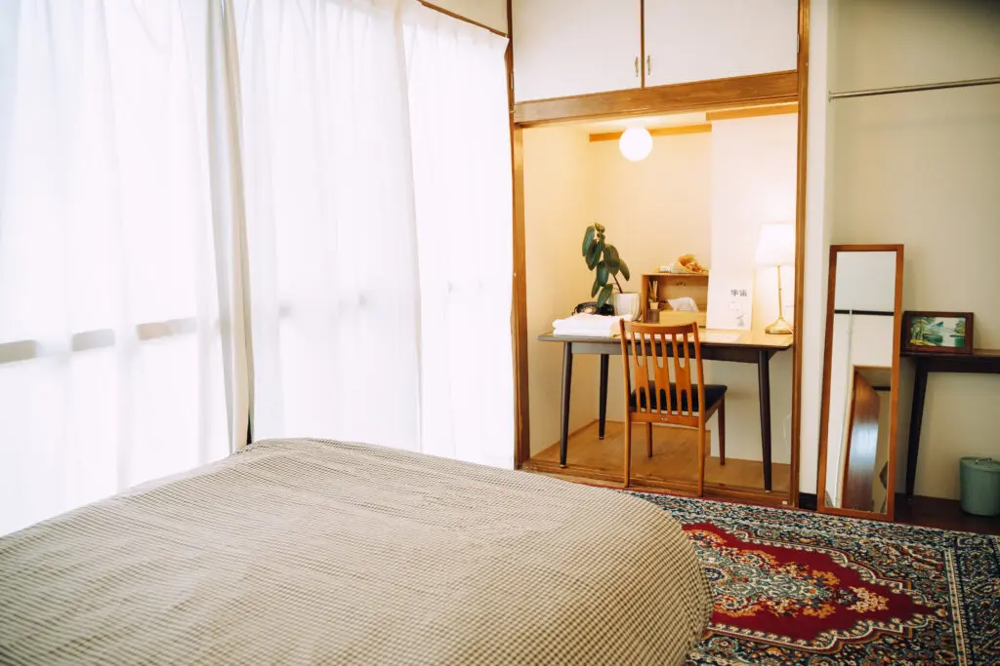
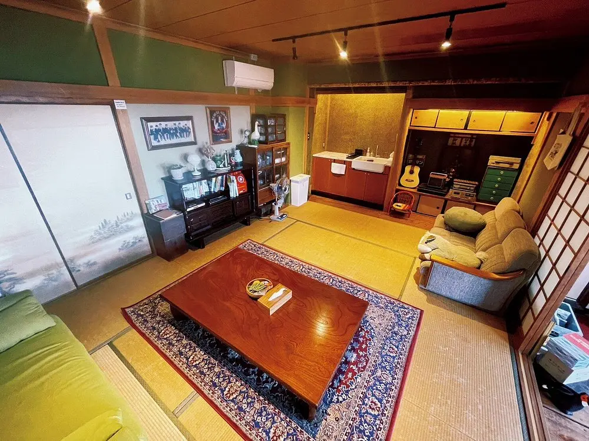
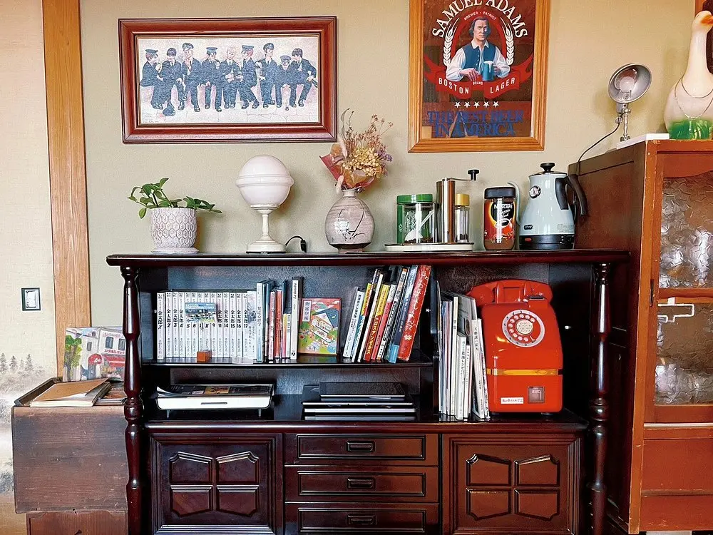
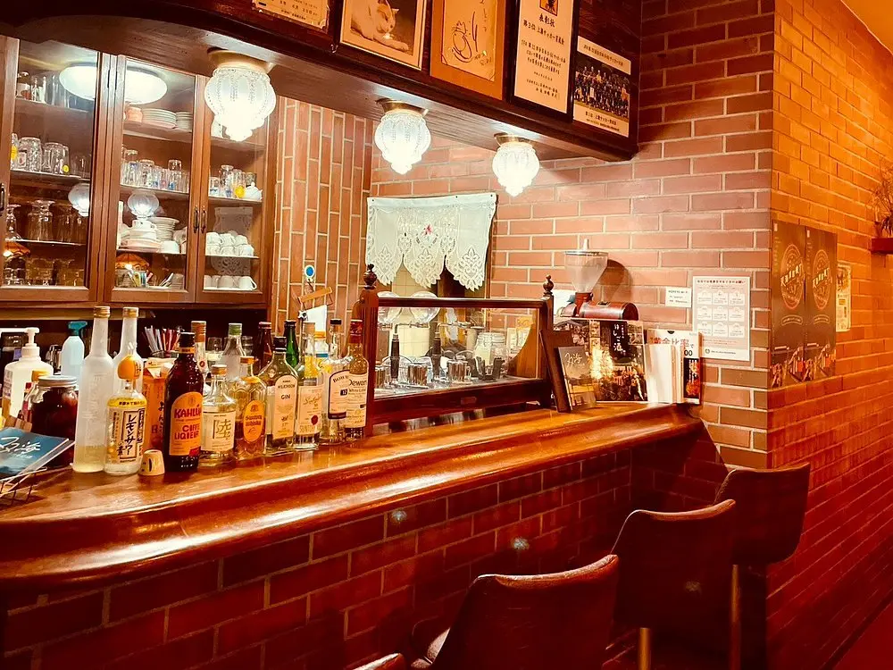
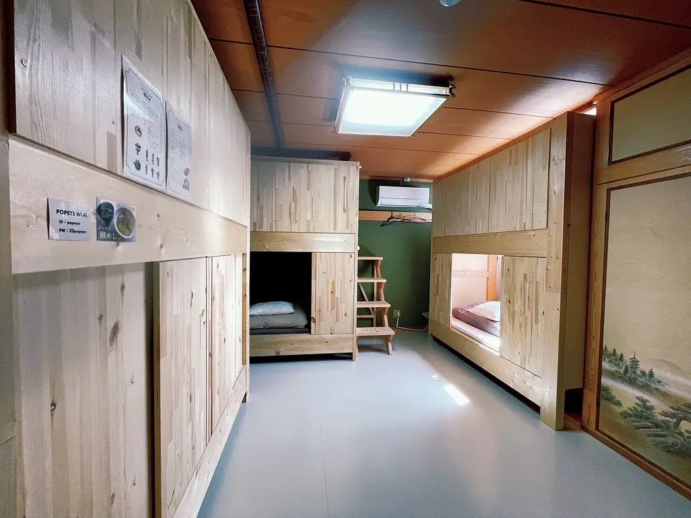
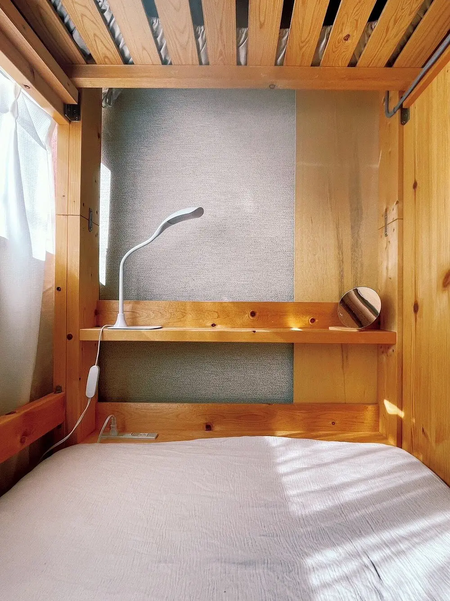
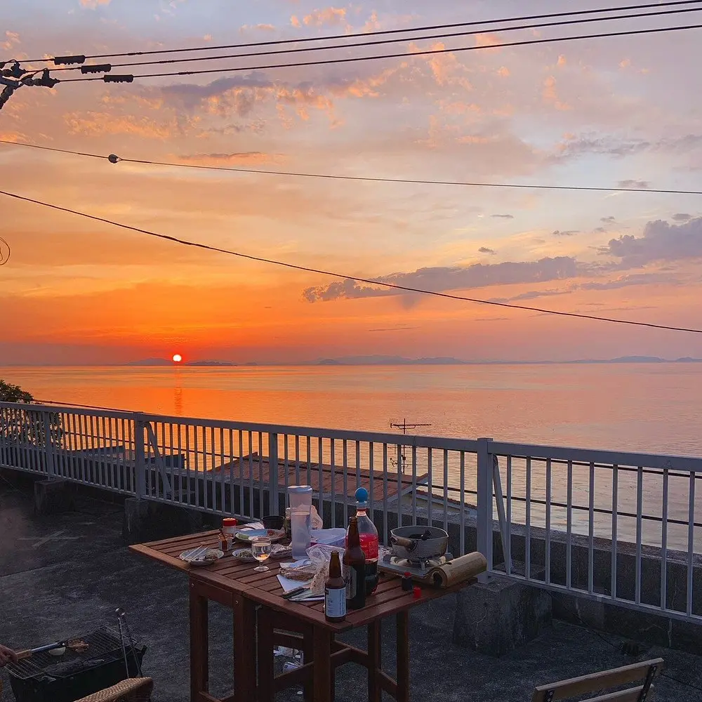

There is a particular kind of Japan that travel guides cannot adequately describe: a coastal town small enough that the train only comes once an hour, where the sea is close enough to hear from every window, where a grandmother's shop has operated on the ground floor for seventy years and the coffee upstairs is still brewed with a siphon because that is the correct way. Futami-cho, in Iyo City on the Shikoku coastline, is that kind of town. And Popeye — officially 海に恋する泊まれる喫茶店ポパイ, "The Kissaten by the Sea That You Can Sleep In" — is precisely that kind of place.
You step off the train at Iyo-Kaminada Station and the building is immediately in front of you. A place that has not changed its fundamental character since the grandparents opened it more than seventy years ago. The first floor is still a small neighborhood shop where local regulars stop in to talk. The second floor is the café, with its siphon coffee and retro Showa interior and a large window that faces the sea. The guesthouse is tucked behind and above — a compact living space that was unused for twenty years before the owner's granddaughter, Saya Ueda, returned from Yokohama in 2020 and renovated it back into use, driven by the conviction that a building this alive with community memory should not simply disappear.
The Building and Its Story: Three Generations, One Mission

The Popeye building has been in the same family for over seventy years, operating as a neighborhood food shop on the ground floor and a coffee shop on the second. The café closed for a period, then reopened in the spring of 2021 by Saya Ueda — the third generation, who had moved back from Yokohama specifically to keep the building and the business alive. Her grandmother had said, quietly, that the town was finished. Ueda's response was to renovate the unused residential section at the back of the building into a guesthouse, reopen the café with its original character intact, and begin building a community around the place that had shaped her childhood summers.
The result is not a designed hospitality concept. It is a living building — one where the owner is present, the staff know the locals by name, and the building's mascot cat, Jiji (named, of course, for the black cat in Kiki's Delivery Service), greets guests at the entrance with the confidence of a co-owner. The Showa-era interior of the café — its counter stools, its wooden fittings, its large window aimed at the sea — was not recreated as a vintage theme. It was simply never changed. That distinction matters considerably more than it might initially seem to the visitor who has not yet sat down.
The Spirited Away Connection: The Line, the Station, and the Sea

Shimonada Station, one stop west of Iyo-Kaminada on the JR Yosan Iyonada Line, is the location that anime pilgrims travel to Ehime to photograph. The platform sits directly above the Seto Inland Sea — no barrier, no median strip, just track and then ocean. A single-car train arrives from the east with the full Iyonada horizon behind it, and the resemblance to the sea railway sequence in Spirited Away — the scene where Chihiro and No-Face ride across the surface of the water toward Zeniba's house, in a world that operates outside ordinary time — is precise enough that the station has become a pilgrimage destination for Ghibli fans from across Japan and abroad. Near the station, rails from an adjacent yard enter the water at the shoreline: the submerged tracks that have drawn the most direct visual comparisons to Miyazaki's imagery.
Popeye places you within this geography as a base, not merely as a day-trip origin point. The train that stops in front of the guesthouse at Iyo-Kaminada is the same train that continues to Shimonada. On the Iyonada Monogatari — the luxury sightseeing train that runs the coastal branch on weekends — one departure times its arrival at Shimonada to coincide with sunset, which is the optimal moment for the scene's visual reference. Guests who travel out to Shimonada in the early evening and return to Iyo-Kaminada have the rooftop terrace at Popeye and an evening bar waiting; they are not dependent on finding accommodation in an area that has almost none.
The Kissaten: Siphon Coffee and the Menu That Was Never Updated
The second-floor café operates Wednesday through Sunday, 11:30 to 16:00 (last order 15:30), closed Monday and Tuesday. It serves the food and drink that defined it during the first generation: Chinese-style ramen made with a generous quantity of dried sardine dashi, iron-plate Neapolitan spaghetti, retro firm-set pudding with caramel, cream soda, and coffee brewed through a siphon. None of these were reintroduced as a vintage concept. They are simply what the café has always served, in the same room, with the same view. The ramen — which the menu calls 中華そば, the older regional name — sells out most days before closing time. The pudding is the firm Showa style, not the soft custard variety that became common in later decades: the caramel runs slightly bitter, the set is dense, and pairing it with siphon coffee is the correct decision. Guests who arrive by the local train and sit at the counter with no particular schedule tend to stay considerably longer than they planned. This is understood as a feature of the space.
Rooms: The Train Room, the Sunset Room, and the Dormitory

The guesthouse has three room types within the main building. The Train Room is a private two-person room of 23 m² with a double bed, a small terrace, and floor-to-ceiling glass windows facing directly onto the platform of Iyo-Kaminada Station. Trains pass approximately once per hour; the view of the single-car rural train against the mountain and sky is one of the more quietly cinematic things available in a budget guesthouse in Japan, and the room is well suited to working remotely or simply sitting with the window open. The Sunset Room is a private four-person room of 28 m² with two double beds and a vintage dresser; its large windows admit the low western light of late afternoon and the amber glow of the Iyonada horizon at dusk. Rates for private rooms start from approximately ¥6,000 per person in double occupancy, ¥7,000 for solo use of the Train Room.
The Dormitory is a 25 m² mixed-gender room with six single beds in a semi-private partitioned layout — the Japanese 半個室 (han-koshitsu) format, where low dividing walls provide visual separation between beds without full enclosure. This is not a capsule pod room: there are no enclosed units, no individual sliding doors, no overhead storage shells. It is a community sleeping space with a degree of privacy, priced from approximately ¥4,000 per person. There is also no manga library at Popeye. The character of the guesthouse is deliberate in this respect: it is a community-facing, locally embedded place rather than an entertainment facility, and the social life happens in the shared tatami living room and kitchen, around the table, with whoever else happened to book the same night.
The Rooftop: The Town Where the Sunset Stands Still
The promotional name for Futami-cho in the Iyo City tourism materials is "the town where the setting sun stands still" — a description earned by the quality of its western exposure, which faces the open Iyo Sea without obstruction and catches the last light across the water longer than any enclosed bay can. Popeye's rooftop terrace is the correct place to test this claim: an open deck above the building where the sun descends into the Iyonada at a pace that guests consistently describe as slower than expected. The terrace hosts occasional events — seasonal rooftop dinners with Ehime local ingredients, wine pairings, small concerts — and is available informally to guests on most evenings. The rooftop BBQ plan (¥3,500 per person, food and equipment included) is available on advance request. Watching the Iyonada sunset from the roof, with the single-car train passing below on its hourly circuit and the outline of the islands in the middle distance going dark, is the experience that most guests describe when asked what staying at Popeye actually felt like.
Plans and What to Order: Hamo, Sea Bream Rice, and Mandarin Cocktails
Beyond the base lodging rate, Popeye offers a dinner add-on plan featuring Futami-cho specialties: Hamo (pike conger) fillet and炊き込み鯛めし (sea bream rice), at ¥2,500 per person. A self-service breakfast plan is also available on request. The evening café bar — operating irregularly from around 18:00 to 21:00 when guests are present — stocks local sake, Ponkan mandarin craft beer from the Futami-cho area, and mandarin citrus cocktails made with local citrus. Confirm availability with staff at check-in, as hours vary by night.
Staff-guided town walks cover locations including Mishima Shrine, the terraced paddies of Motoya, the fishing community of Uogichi, and the historical background of Shimonada Station itself. The guide operates in both Japanese and English, and transport is by car or occasionally tuk-tuk, at rates from ¥10,000 per group. For guests considering longer stays or relocating to the area, staff can connect visitors with the Iyo City migration support center.
Getting There: The Iyonada Line from Matsuyama
From Matsuyama Station, take the JR Yosan Line on the Iyonada coastal branch — known locally as the Aiaru Iyonada Line — and alight at Iyo-Kaminada Station. The journey takes approximately 40 minutes; trains run roughly once per hour and the timetable should be checked in advance. Popeye is directly in front of the station exit: no navigation required. By car from Matsuyama, the drive takes approximately 40 minutes via National Route 378 (the Yuyake-Koyake Line, named for its sunset views); parking is available in a small lot indicated by Popeye signage on the hillside approach road. The Iyonada Monogatari luxury sightseeing train, which operates on weekends and public holidays and requires advance reservation, also stops at Iyo-Kaminada and Shimonada — it is the most atmospheric way to arrive if the schedule permits.
Practical Information
- Check-in: From 16:00 Check-out: By 11:00
- Rooms: Train Room (2P / double bed / station view terrace) · Sunset Room (4P / 2 double beds / western light) · Dormitory (6 beds / mixed / semi-private 半個室 — not capsule pods)
- Rates: Dormitory from ¥4,000/person · Private rooms from ¥6,000/person (double) · Train Room ¥7,000 solo
- No Manga Library: Popeye does not have a manga library — it is a community guesthouse, not an entertainment facility
- Café Hours: Wed–Sun 11:30–16:00 (last order 15:30) · Closed Mon–Tue
- Rooftop Terrace: Open to guests · BBQ plan from ¥3,500/person (advance booking required)
- Dinner Plan: Futami local specialties (Hamo, sea bream rice) from ¥2,500/person add-on
- Evening Bar: Irregular ~18:00–21:00 · Local sake, mandarin craft beer, citrus cocktails · Confirm at check-in
- Town Guide: Japanese/English · Car or tuk-tuk · From ¥10,000/group
- Spirited Away Station: Shimonada — 1 stop west on JR Yosan Iyonada Line from Iyo-Kaminada
- From Matsuyama: JR Yosan Iyonada Line to Iyo-Kaminada (~40 min · ~1 train/hour) · Popeye is directly in front of the station
- By Car: ~40 min from Matsuyama via Route 378 · Free parking on-site
- Iyonada Monogatari: Luxury sightseeing train · Stops at Iyo-Kaminada and Shimonada · Weekends and public holidays · Advance reservation required
| Full Name | 海に恋する泊まれる喫茶店 ポパイ (Yado Popeye / Guesthouse Popeye) |
| Address | 956-5 Takagishi-ko, Futami-cho, Iyo City, Ehime Prefecture 〒799-3207 |
| Phone | 050-6870-5413 |
| Anime Connection | Spirited Away — Shimonada Station (the sea railway scene) is 1 stop west on the same JR Yosan Iyonada Line; Popeye is directly at Iyo-Kaminada Station |
| Founded | 70+ years ago · Reopened as guesthouse 2021 by 3rd-generation owner Saya Ueda |
| Rooms | Train Room (2P private) · Sunset Room (4P private) · Dormitory (6 beds / mixed / semi-private) · 2 separate rental cottages (Olive, Suu) |
| No Capsule Pods | Dormitory uses semi-private partitioned beds (半個室), not enclosed capsule units |
| No Manga Library | Popeye is a community guesthouse; no manga collection on-site |
| Café Specialties | Siphon coffee · Showa firm pudding · Dried-sardine ramen (中華そば) · Iron-plate Neapolitan · Cream soda |
| Rooftop | Open terrace · Sunset over Iyonada Sea · BBQ and events available (advance booking) |
| Nearest Station | JR Iyo-Kaminada Station (Yosan Iyonada Line) — directly in front of the building |
| Best Time to Visit | Year-round · Sunset quality is highest October–March · Summer for the Seishun 18 Ticket coastal rail period |
Photo Gallery

Photo 1
Photo 2
Photo 3'">
Photo 4'">
Photo 5'">
Photo 6'">Take the Coastal Train. Get Off at Iyo-Kaminada.
The café is open. The rooftop faces west. One stop down the line, the Spirited Away sea is waiting.
Visiting for the Spirited Away pilgrimage? Read our full location guide: Through the Tunnel — Every Real-Life Spirited Away Location in Japan →
← Back to Stay